Publications
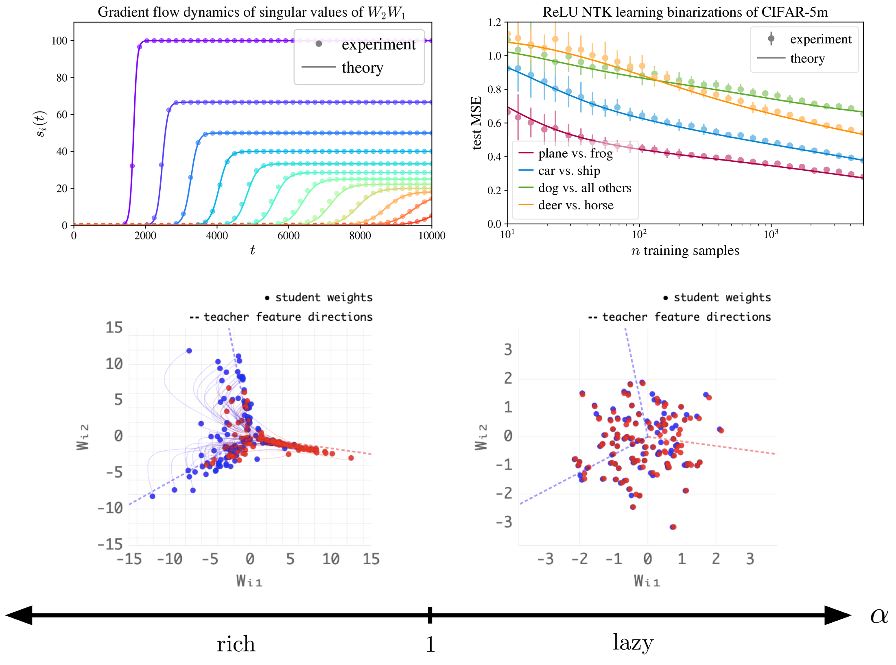
There Will Be a Scientific Theory of Deep Learning
A position paper co-authored with Jamie Simon, Daniel Kunin, Enric Boix-Adserà, Blake Bordelon, Arthur Jacot, and nine other collaborators. We argue that a scientific theory of deep learning is emerging, and propose the name learning mechanics for it: a falsifiable, predictive mechanics of the training process. We pull together five strands of recent work that jointly point in this direction: solvable idealized settings, tractable infinite-size limits, simple empirical laws, theories of hyperparameters, and universal training behaviors. The paper points to important open directions and hosts companion materials at learningmechanics.pub.
(2026) [arXiv] [Companion site]
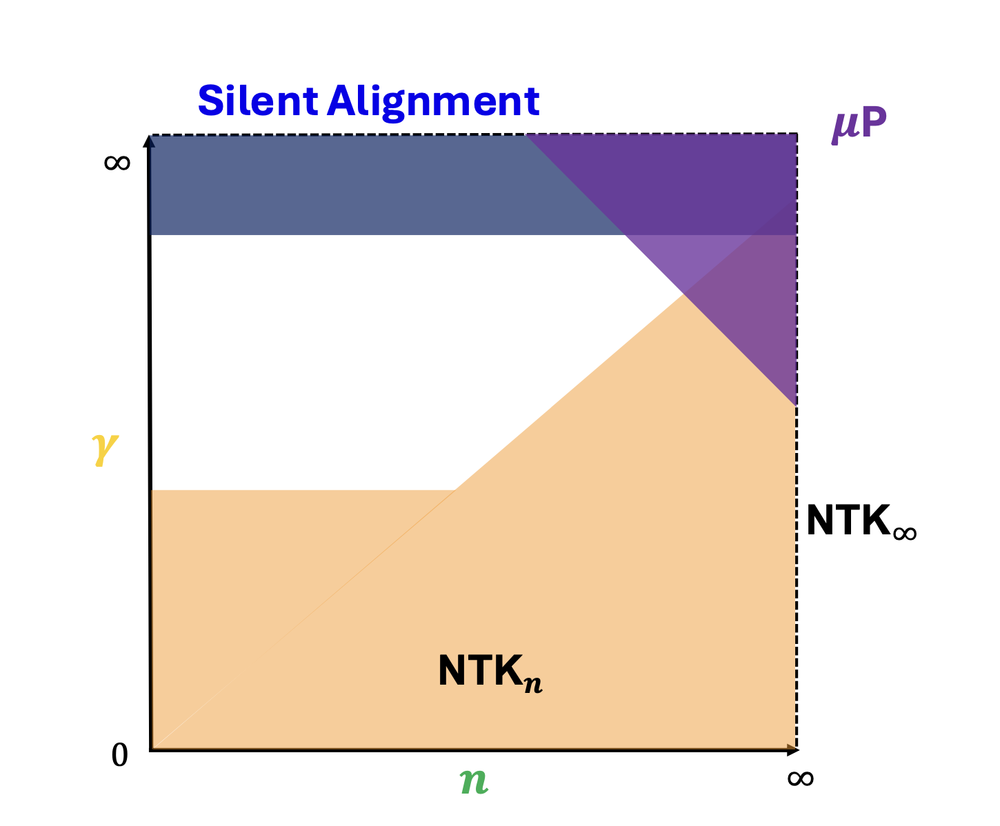
PhD Thesis: Scaling and Renormalization in Statistical Learning
Abstract: This thesis develops a theoretical framework for understanding the scaling properties of information processing systems in the regime of large data, large model size, and large computational resources. The goal is to develop an understanding of the impressive performance that deep neural networks have exhibited.
The first part of this thesis examines models linear in their parameters but nonlinear in their inputs. This includes linear regression, kernel regression, and random feature models. Utilizing random matrix theory and free probability, I provide precise characterizations of their training dynamics, generalization capabilities, and out-of-distribution performance, alongside a detailed analysis of sources of variance. A variety of scaling laws observed in state-of-the-art large language and vision models are already present in this simple setting.
The second part of this thesis focuses on representation learning. Leveraging insights from models linear in inputs but nonlinear in parameters, I present a theory of early-stage representation learning where a network with small weight initialization can learn features without altering the loss. This phenomenon, termed silent alignment, is empirically validated across various architectures and datasets. The idea of starting at small initialization leads naturally to the "maximal update parameterization", μP, that allows for feature learning at infinite width. I present empirical studies showing that practical networks can approach their theoretical infinite-width feature learning limits. Finally, I consider down-scaling the output of a neural network by a fixed constant. When this constant is small, the network behaves as a linear model in parameters; when large, it induces silent alignment. I present theoretical and empirical results of the influence of this hyperparameter on feature learning, performance, and dynamics.
Committee: Cengiz Pehlevan, Haim Sompolinsky, and Michael Brenner.
(2024) Accepted [Harvard] [ProQuest]
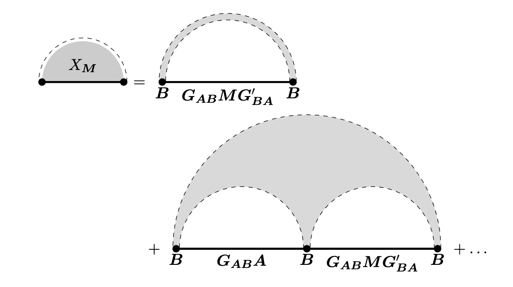
Two-Point Deterministic Equivalence for Stochastic Gradient Dynamics in Linear Models
Work with Blake Bordelon, Jacob Zavatone-Veth, Courtney Paquette and Cengiz Pehlevan. Using random matrix theory, we derive a novel deterministic equivalence. Essentially all results (up to that point) on models of neural scaling laws in high-dimensional regression follow directly from this equivalence. This accounts for finite training time, finite dataset size, finite parameter count, and SGD effects jointly.
(2025) Advances in Theoretical and Mathematical Physics; ICML 2025 Workshop on High-dimensional Learning Dynamics [Journal Link] [OpenReview] [arXiv]
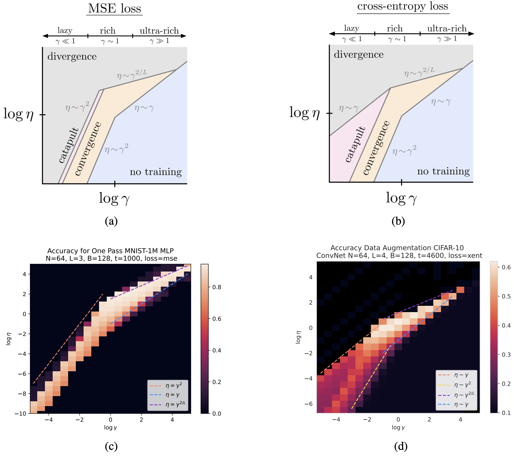
The Optimization Landscape of SGD Across the Feature Learning Strength
Work with Jamie Simon, Alex Meterez, and Cengiz Pehlevan. We perform a thorough sweep over the feature learning strength (also known as the "richness") for large-scale networks trained on real data. We find that the optimal learning rate in SGD depends nontrivially on the richness, in a way that has not been explored in prior literature. We focus on the online setting, representative of modern large models. This setting has been underexplored both theoretically and empirically when studying the effect of richness. We identify several scaling regimes of the learning rate with the richness, and explain them in a simple model. These regimes exhibit a wealth of different dynamical phenomena, including catapult effects, progressive sharpening, and the silent alignment effect. After accounting for the learning rate, we find that richer networks are at least as good as standard networks. We also observe a remarkable consistency of dynamics, learned functions, and learned representations in the ultra-rich regime that has not been previously reported.
(2024) ICLR 2025 [OpenReview] [arXiv]
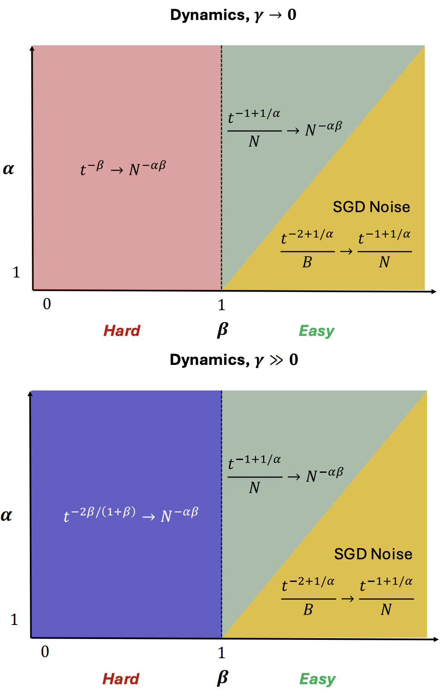
How Feature Learning Can Improve Neural Scaling Laws
Work with Blake Bordelon and Cengiz Pehlevan. We propose the simplest model where feature learning yields a concrete and measurable improvement to the neural scaling law of performance with time. By leveraging linear network theory combined with dynamical mean field theory, we derive exact analytic expressions for the dynamics. We identify three scaling regimes corresponding to varying task difficulties: hard, easy, and super easy tasks. For easy and super-easy target functions, which lie in the reproducing kernel Hilbert space (RKHS) defined by the initial infinite-width Neural Tangent Kernel (NTK), the scaling exponents remain unchanged between feature learning and kernel regime models. For hard tasks, defined as those outside the RKHS of the initial NTK, we demonstrate both analytically and empirically that feature learning can improve scaling with training time and compute, nearly doubling the exponent for hard tasks. This leads to a different compute-optimal strategy to scale parameters and training steps in the feature-learning regime. We propose a hypothesis that feature learning only improves the scaling law if the task is outside the Hilbert space of the infinite width NTK, and dub this the Source Hypothesis, as it requires the source exponent to be below a specific threshold for feature learning to yield scaling improvement. We further extract corrections due to finite model size, finite dataset size, and SGD noise.
(2024) ICLR 2025 (Spotlight) [OpenReview] [arXiv]
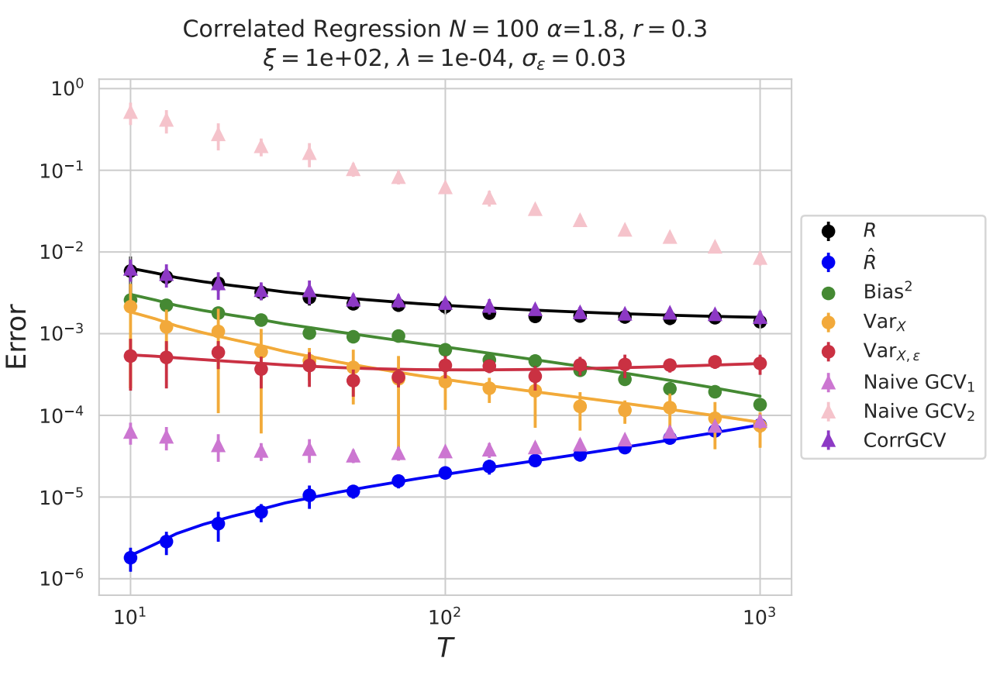
Risk and Cross Validation in Ridge Regression with Correlated Samples
Work with Jacob Zavatone-Veth and Cengiz Pehlevan. By leveraging techniques in modern random matrix theory and free probability, we obtain exact analytic results for the performance of ridge regression when samples have correlations between one another. This goes beyond the common i.i.d. setting that is usually studied. We demonstrate that in this setting, the generalized cross validation estimator (GCV) fails to correctly predict the out-of-sample risk. However, under realistic assumptions on the noise structure, we show that there exists a modification of the GCV that yields an efficiently-computable unbiased estimator of the out-of-sample risk. We dub this the CorrGCV. Finally, we also exactly characterize the over-optimism of testing on a point with nontrivial correlations to the training set.
(2024) ICML 2025 [OpenReview] [arXiv]
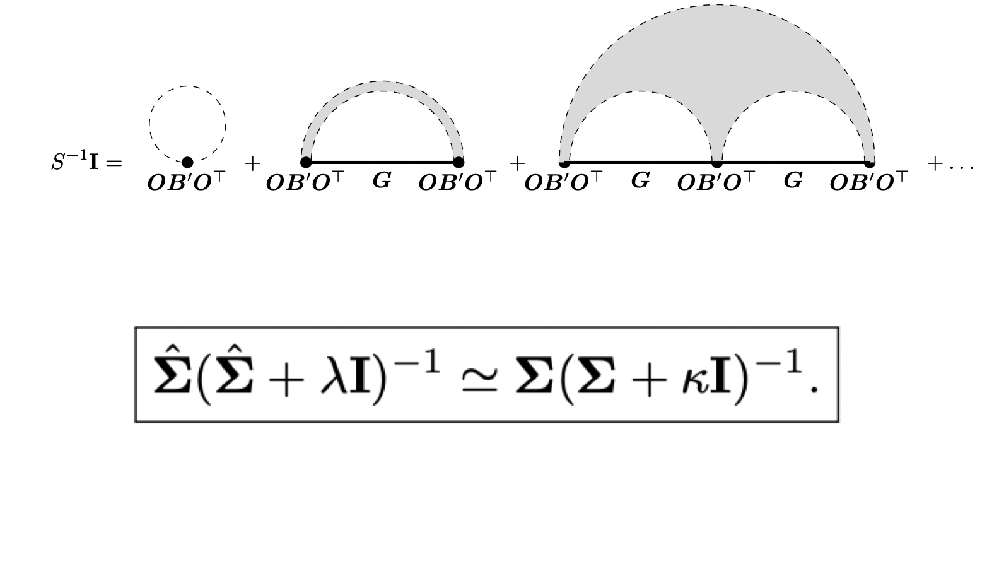
Scaling and Renormalization in High-Dimensional Regression
Work with Jacob Zavatone-Veth and Cengiz Pehlevan. We introduce the basic concepts of random matrix theory and free probability necessary to characterize the performance of high-dimensional regression across a variety of machine learning models. By applying the S-transform of free probability, we provide a straightforward derivation of the average case behavior of many of the quantities of interest in these settings. We also provide novel formulas for the generalization error of general random feature models and fine-grained bias-variance decompositions in that setting. We go on to study the scaling properties of random feature models, and the effects of weight structure and additive feature noise. Our results extend and provide a unifying perspective on earlier models of neural scaling laws.
(2024) Journal of Statistical Mechanics [Journal Link] [arXiv] [Press]
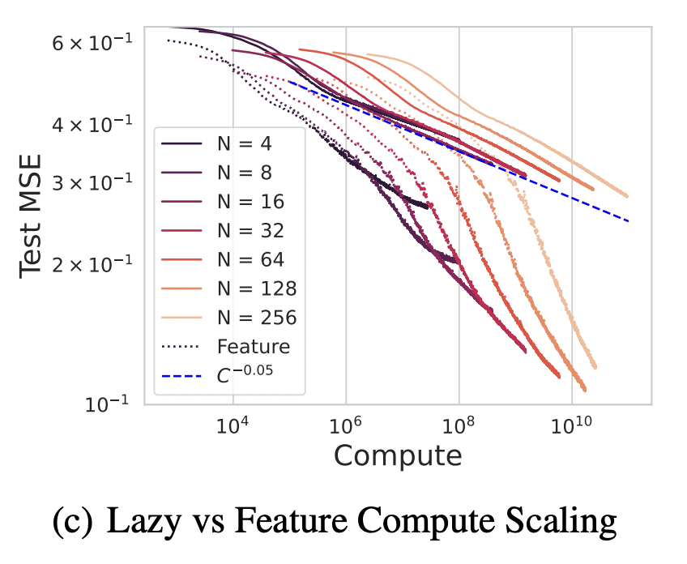
A Dynamical Model of Neural Scaling Laws
Work with Blake Bordelon and Cengiz Pehlevan. We study a model similar to our onset of variance paper, which involves projecting a large set of features down to a lower dimensional space and trying to reconstruct the signal from that. Here, however, we use dynamical mean field theory (DMFT) to analytically recover exact analytic expressions for the training and generalization dynamics of this model through time. This recovers many of the major phenomena observed in the training of large-scale language and vision models.
(2024) ICML 2024 [OpenReview] [arXiv]
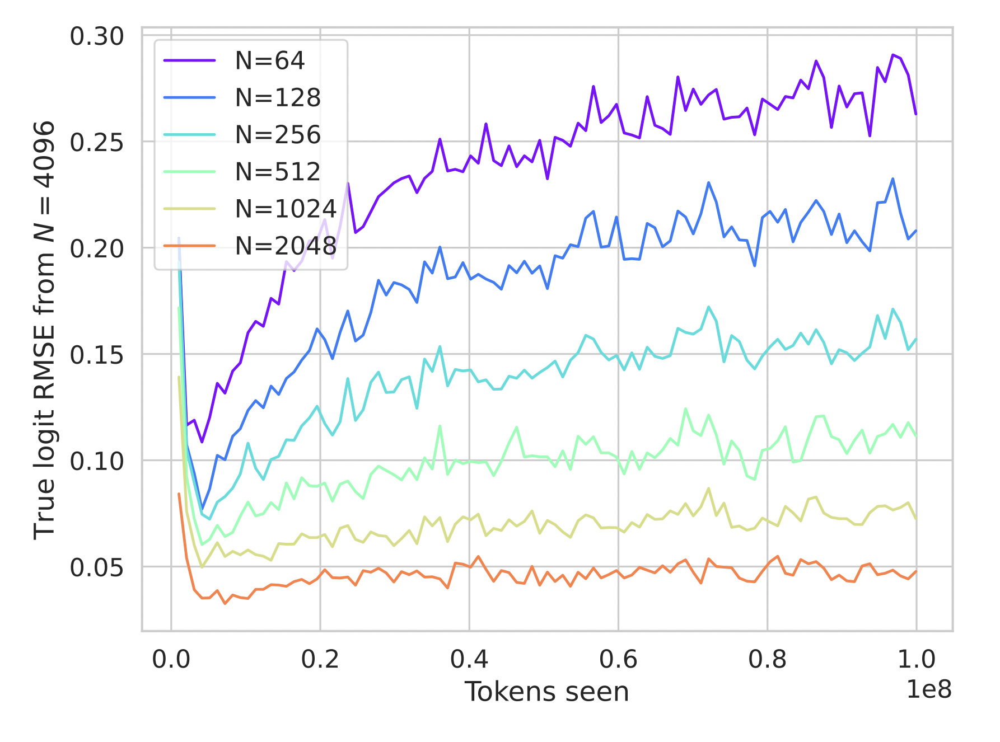
Maximal Update (μP) Networks Are Consistent Across Widths At Realistic Scales
Work with Nikhil Vyas, Blake Bordelon, Depen Morwani, Sabarish Sainathan, and Cengiz Pehlevan. We perform an extensive empirical study on realistic networks in the "maximal update parameterization" (μP) of Greg Yang (introduced by other authors under the name "mean field parameterization)". In this parameterization, networks can learn features even at infinite width. We study networks across realistic datasets for vision nets on (CIFAR-5m, ImageNet) and transformer models on (Wikitext-103, C4). Wider networks are seen to perform better, consistent with prior works. We show that not only do loss curves of realistically wide networks converge to a limiting behavior corresponding to the infinite width limit, but that the individual network outputs, internal representations, and dynamical phenomena also behave nearly identically across large widths. We find that this is robust across architectures and datasets in the setting where each example is new, but that when frequently repeating examples, it can be broken. Finally, we develop a new spectral perspective on the bias that can make narrower width networks perform worse, even after ensembling.
(2023) NeurIPS 2023 [OpenReview] [arXiv]
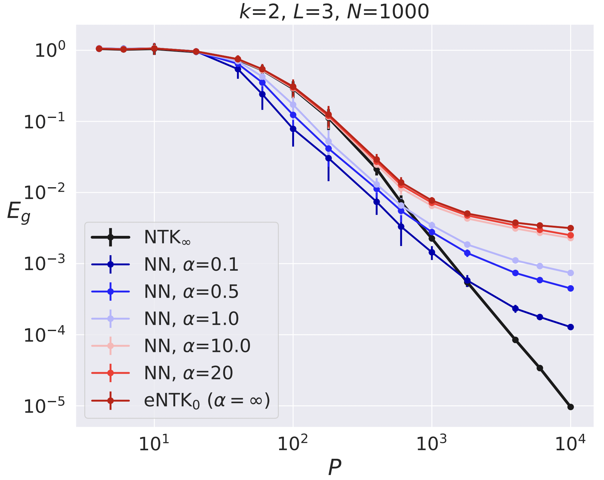
The Onset of Variance-Dominated Behavior for Networks in the Lazy and Rich Regimes
Work with Blake Bordelon, Sabarish Sainathan, and Cengiz Pehlevan. At infinite width, the training and generalization capabilities of neural networks simplify to those of kernel machines or "mean field limits". We empirically study the problem of polynomial interpolation with finite-width networks and observe that as the dataset size grows, the network enters a regime where it strictly underperforms its infinite-width counterpart. We demonstrate that this worse behavior is driven by initialization variance and that one can recover the infinite width limit to high accuracy by ensembling over sufficiently many initializations of the network. This transition can be delayed by feature learning. We demonstrate that this behavior is reproduced in a simple "signal plus noise" toy model.
(2022) ICLR 2023 [OpenReview] [arXiv]
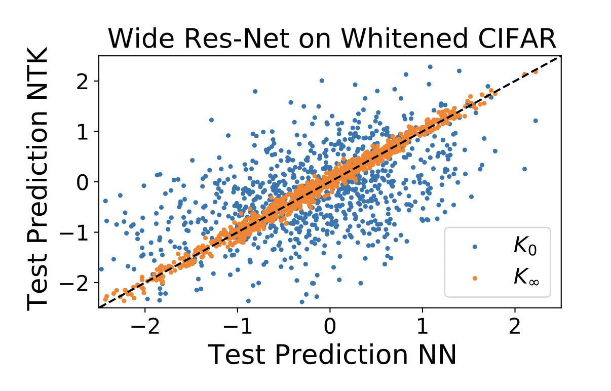
Neural Networks as Kernel Learners: The Silent Alignment Effect
Work with Blake Bordelon and Cengiz Pehlevan. In the limit of infinite hidden layer width, appropriately initialized neural networks become kernel machines with a data-independent neural tangent kernel (NTK). For finite width networks, the story changes, often drastically. This paper studies finite width networks at small initialization trained on whitened data and demonstrates how such networks can still be kernel machines with a data-dependent learned NTK. We analytically solve for the dynamics of linear networks in this regime and calculate the exact form of the final NTK. There, we identify a phase of training where the NTK aligns itself to the data well before it grows in absolute magnitude and before the loss drops substantially. We term this phenomenon "silent alignment". For nonlinear networks, much of the analysis goes through unchanged. We observe that in the case of unwhitened data, the network can realign itself drastically and not match the final NTK predictions.
(2021) ICLR 2022 [OpenReview] [arXiv]

PsychRNN: An Accessible and Flexible Python Package for Training Recurrent Neural Network Models on Cognitive Tasks
A publication resulting from my undergraduate work in John Murray's lab. I worked on this from 2016-2018 in collaboration with David Brandfonbrener, Daniel Ehrlich, and Jasmine Stone. The goal of this package is to give a platform for computational neuroscience researchers to more easily construct neural network architectures with biological constraints. The focus is on RNN-type architectures relevant for the modeling of working memory.
(2021) eNeuro [Journal Link] [bioRxiv] [Code Repository]
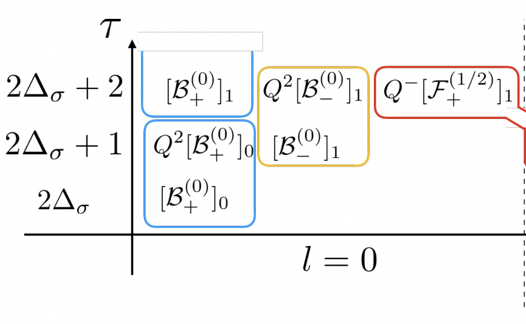
Precision Bootstrap for the N = 1 Super-Ising Model
Work with David Poland, Junchen Rong, Ning Su, and Aaron Hillman. We extend prior results from both of our groups on the minimal supersymmetric extension to the 3D Ising universality class to provide a more thorough numerical analysis. We combine this with analytic techniques coming from the structure of conformal theories at large spin and demonstrate solid agreement between analytic theory and numerical experiment. A deeper analytic understanding of this universality class may open the door for new methods and ideas to tackle its cousin: the 3D Ising model.
(2022) Journal of High Energy Physics [Journal Link] [arXiv]
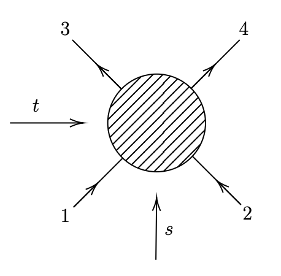
Conformal Block Expansion in Celestial Conformal Field Theory
Work with Andy Strominger and collaborators. Flat space amplitudes can be recast as correlation function on a "celestial sphere" at null infinity. These correlation functions are constrained to satisfy conformal covariance coming from the Lorentz group in flat spacetime. The corresponding 4-point correlation functions for a 2-to-2 scattering process can be expanded in terms of conformal blocks. This expansion captures the spectral data that is exchanged from the celestial perspective. For scalar external particles with massive scalar exchange, we find a new class of light-ray operators that are exchanged, and construct their corresponding waveforms in flat space.
(2021) Physical Review D [Journal Link] [arXiv] [IAS Talk]
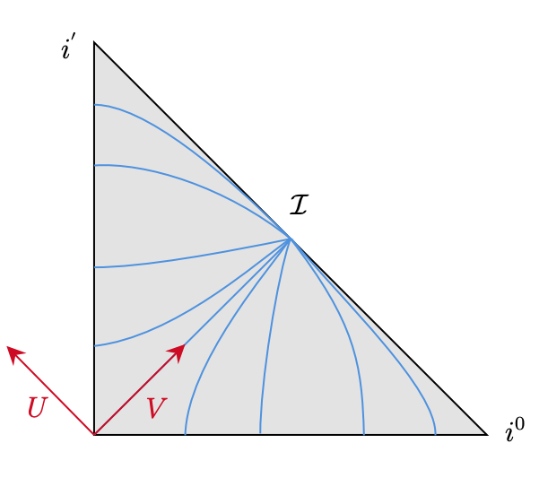
(2,2) Scattering and the Celestial Torus
Work with Andy Strominger and collaborators on understanding the asymptotic structure of spacetime in mixed 2,2 signature, which we call "Klein Space", and its relationship to scattering and the celestial holography program. We provide the resolution of null infinity in 2,2 signature as a torus fibration over an interval. The corresponding "celestial torus" is conjectured to hold a conformal field theory containing information on scattering processes. We derive a new basis of scattering states motivated by the symmetries of this torus, and relate this to the conventional Mellin basis used in the existing literature.
(2021) Journal of High Energy Physics [Journal Link] [arXiv] [Princeton Talk]
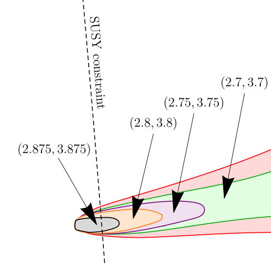
Bootstrapping the Minimal 3D Superconformal Field Theory
A paper written in collaboration with Aaron Hillman and my undergraduate physics advisor, Professor David Poland, published in the Journal of High Energy Physics (JHEP). We apply the conformal bootstrap program to study a space of interesting conformal field theories (CFTs). In the past, the conformal bootstrap has had great success in pinning down the critical exponents of the famously impenetrable 3D Ising model to the highest precision ever achieved. Here, we present a bootstrap study of the space of 3D CFTs sharing the same parity symmetry and relevant operator structure as the 3D Ising model. This space is diagrammed and elaborated upon in this beautifully-written Quanta article. We note a new kink that lies near the conjectured scaling dimensions of the 3D N = 1 Ising model: the Ising model's supersymmetric cousin. A noted prior work conjectures that this supersymmetric theory may in fact be emergent at the boundary of topological superconductors. By combining a scan over three-point function coefficients together with an analytic formula derived form supersymmetry that constrains the three-point correlators, we obtain tight bounds for the scaling dimensions and operator spectra of this model. Our results lead us to conjecture a surprising exact value for the 3-point coefficient ratio of this CFT. This then gives a conjectured exact analytic value for the scaling dimensions of the first two relevant scalars.
(2018) Journal of High Energy Physics [Journal Link] [arXiv] [Code Repository]
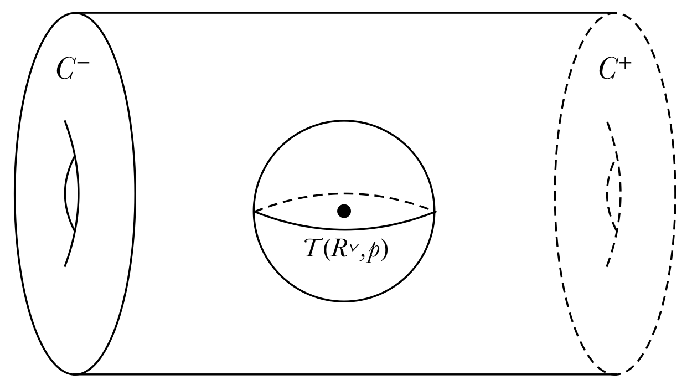
Magnetic Monopoles, 't Hooft Lines, and the Geometric Langlands Correspondence
My undergraduate thesis in mathematics under my advisor, Professor Philsang Yoo. Provides an overview of the Geometric Langlands correspondence from the point of view of physics. This thesis is based on the material I learned from my advisor's two seminar courses on the subject, a variety of independent reading, and by attending a conference on the same topic at the Perimeter Institute.
(2018) Yale Senior Thesis [PDF] [Presentation Slides]
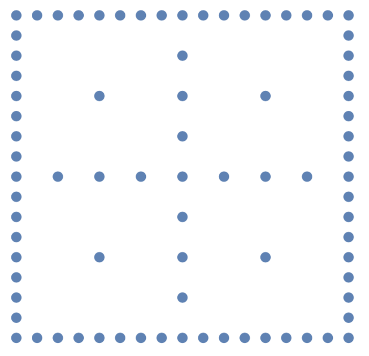
Sparse Grid Discretizations based on a Discontinuous Galerkin Method
A paper written in collaboration with Dr. Erik Schnetter at the Perimeter Institute for theoretical physics, on using the discontinuous Galerkin method together with sparse grids to evolve scalar wave equations in higher dimensional spacetimes. We developed a julia package, GalerkinSparseGrids.jl for the implementation of this theory, and present its results for 5+1 and 6+1-dimensional wave evolutions in the paper. This yields a significant computational step forward in the capacity to solve hyperbolic partial differential equations in higher dimensional space, and we hope to extend this work to Einstein's equations in an anisotropic spacetime.
(2017) [arXiv] [PDF] [Code Repository]
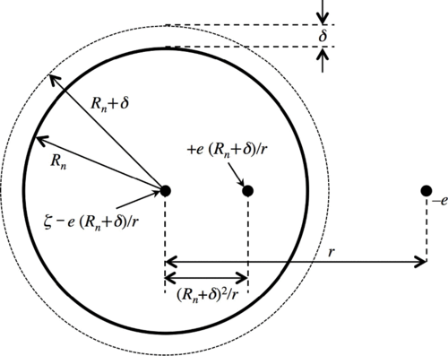
Simple, accurate electrostatics-based formulas for calculating detachment energies of fullerenes
A paper written in collaboration with Dr. James Ellenbogen at the MITRE Corporation, published in Physical Review A, on deriving a simple analytic formulas via electrostatics-based methods to accurately calculate the values of electron affinities, ionization potentials, and capacitances of icosahedral carbon fullerenes. The aforementioned analytic formulae yield significant insight into both the physics of electron detachment in the fullerenes and shed light on prior investigations of the relationship between sizes of the fullerenes and their molecular capacitances.
(2017) Physical Review A [Journal Link] [PDF]
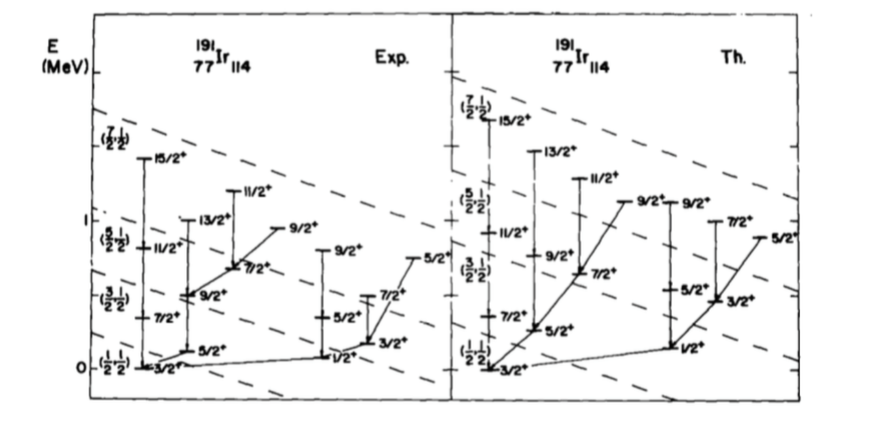
Graded Lie Algebras, Supersymmetry, and Applications
Final term paper on supersymmetry for Francesco Iachello's class on Group Theory, Lie Algebras, and their applications to physics. Many of the examples are taken from the material he provided me (c.f. the references section).
(Fall 2015) [PDF]